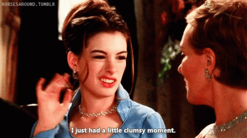
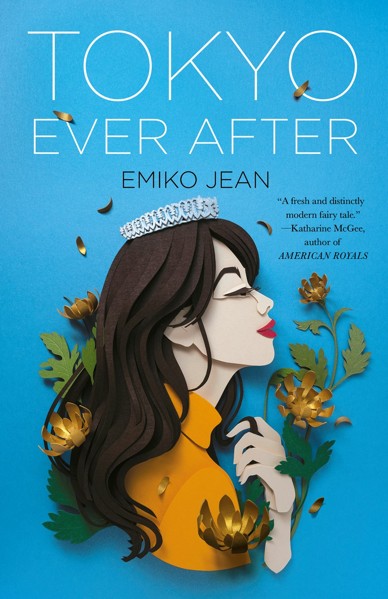
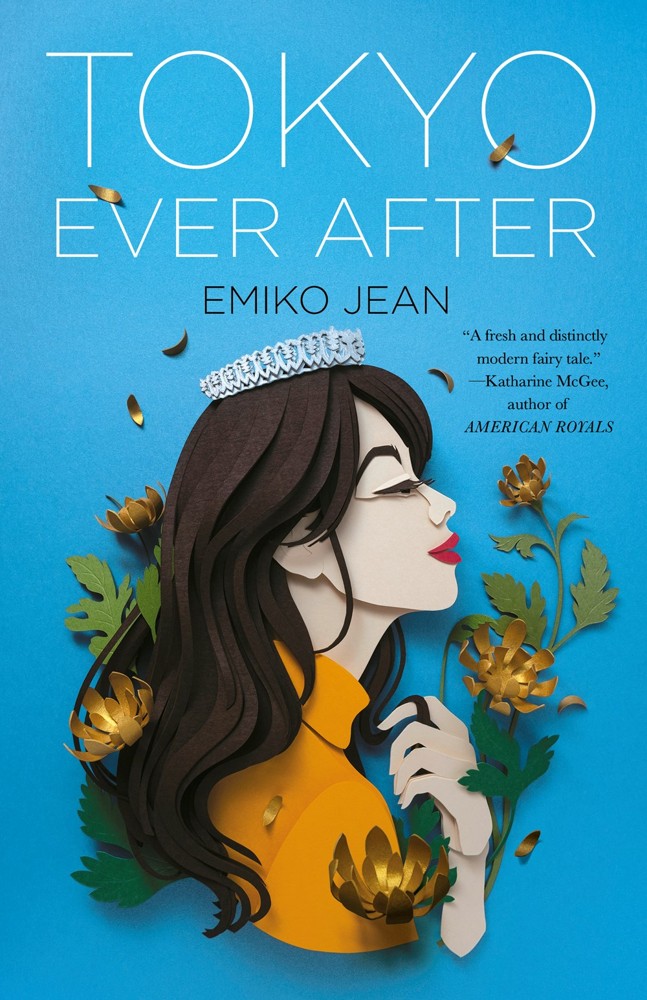

Tokyo Ever After
May 6, 2021
I was really excited to see a book that was pitched as Crazy Rich Asians meets Princess Diaries - two of my favorite series. The five-year-old inside of me, who wanted to be a princess when she grew up, was so incredibly excited to read this, and I wasn't disappointed.
This book was incredibly funny, I found myself laughing at the things that Izumi in particular was thinking or saying, and that made the book all the more enjoyable. Izumi is an incredibly relatable teenager, and I wanted to be her friend.
As someone who has never been to Japan, the descriptions that Jean provides are so beautiful, and I found myself falling in love with Japan as seen through Izumi's eyes.
I appreciated the nuance brought in between being the child of immigrants and the struggle that comes with trying to fit in with one culture or another, especially when you end up growing up somewhere where you are relatively different. It's fun to see Izumi acknowledge that part of the reason Noora, Hansani and Glory became friends was that they were the four Asians in their town who banded together and then became really close. The fact that Izumi didn't know Japanese and struggled to learn Kanji made my heart ache for her. As an Asian-American child of immigrants myself, these struggles of identity and trying to connect to your culture rang strongly through me, and I loved seeing this in media.
"I could spend a whole lifetime learning the customs, navigating the culture, but I'll never belong. I'm a Twinkie. Yellow on the outside, white on the inside. I hate that term. Does that mean I hate myself? No. I just hate the division."
I also liked how Izumi was considered average when it came to her grades, and how she didn't immediately throw herself into studying everything there was to know about being a princess (and has plenty of mishaps because of it). It's refreshing to see an Asian American who isn't forced into the model minority myth. It was fun to see her grow and learn and make fumbles as she went, and how she acknowledged that it's not smooth sailing but asked for people to be patient with her as she adjusted to her new role.
I loved the royal x bodyguard trope, and it was fun to see it play out here, especially as a pseudo-enemies-to-lovers trope built-in as well. Akio slowly won my heart as he won Izumi's, and I loved the way their relationship panned out.
While I think this is a stand-alone book, I would love to read any continuations and think that there's so much more to be expanded upon into a series. I loved this book so, so much.
A thank you to Flatiron Books and NetGalley for the ARC.

More about Tokyo Ever After here:
 

Title: Tokyo Ever After
Author: Emiko Jean
Izumi Tanaka has never really felt like she fit in—it isn’t easy being Japanese American in her small, mostly white, northern California town. Raised by a single mother, it’s always been Izumi—or Izzy, because “It’s easier this way”—and her mom against the world. But then Izzy discovers a clue to her previously unknown father’s identity… and he’s none other than the Crown Prince of Japan. Which means outspoken, irreverent Izzy is literally a princess.